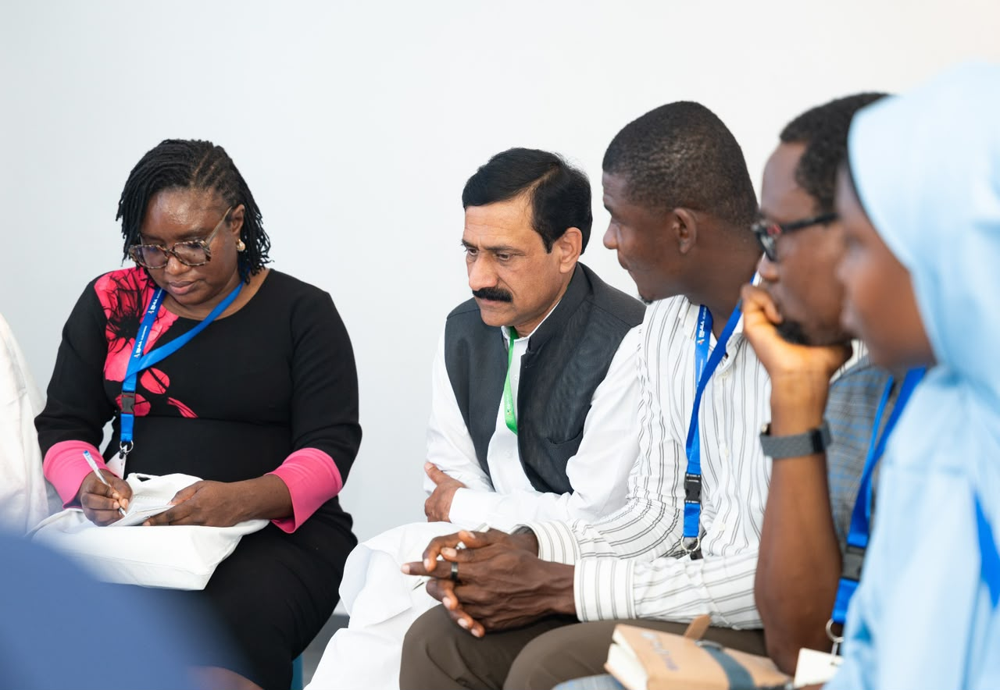
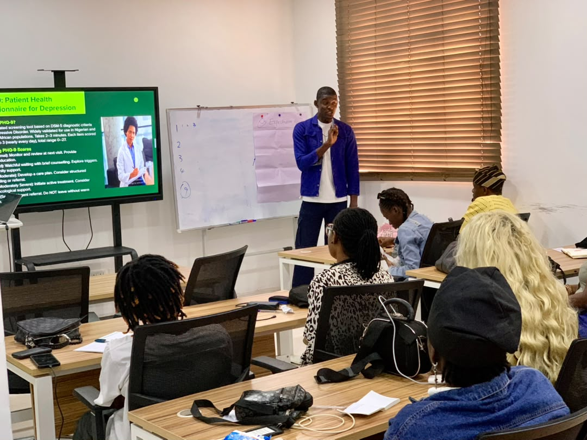
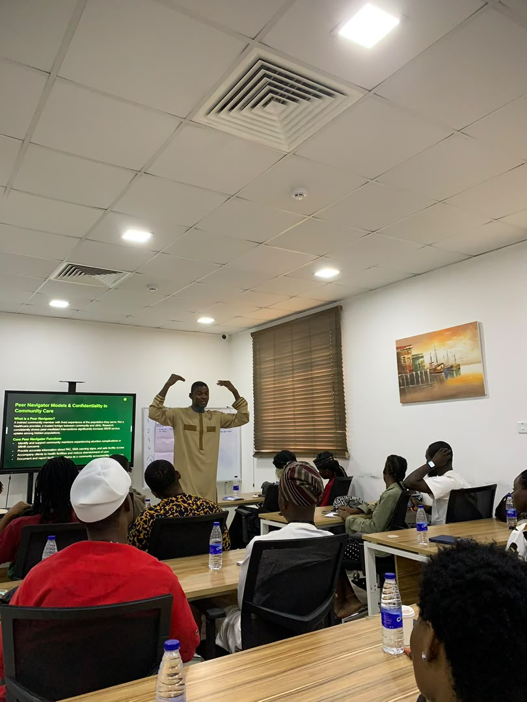

Speaking engagements
- Adolescent and Youth Reproductive Health Conference, Kenya — presented findings on child marriage as a form of violence
- Reproductive Health Network Kenya Conference, Mombasa
Training & facilitation
- Designed and facilitated SRHR and GBV training sessions for Deutsche Gesellschaft für Internationale Zusammenarbeit (GIZ) Nigeria and GIZ-ECOWAS under the PEACECORE Project, training over 40 staff over the past three years
- Mentored 53 change agents and coordinated 5 community advocacy dialogues
- Redesigned the GFF community dialogue model in Kaduna, replacing town-hall formats with structured community dialogues
- Trained healthcare workers and peer navigators on SRHR and Post-Abortion Care
- John Maxwell trained leader